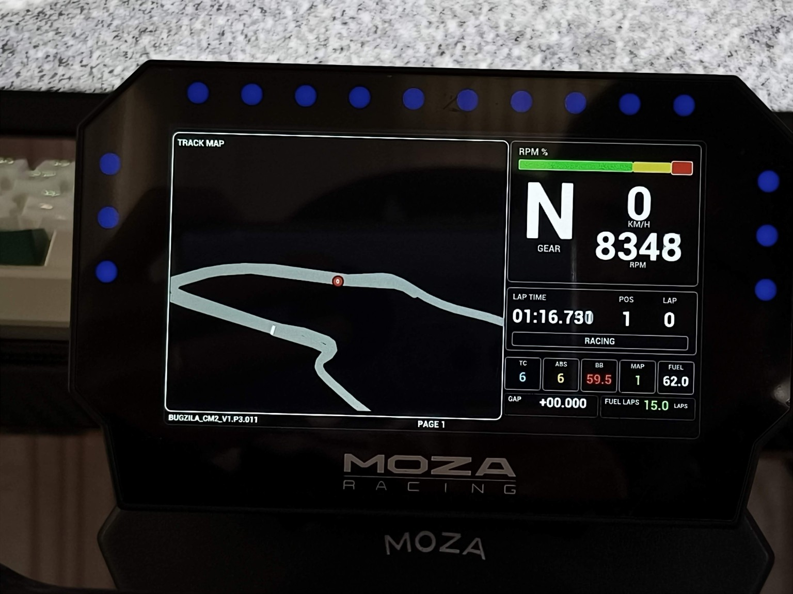
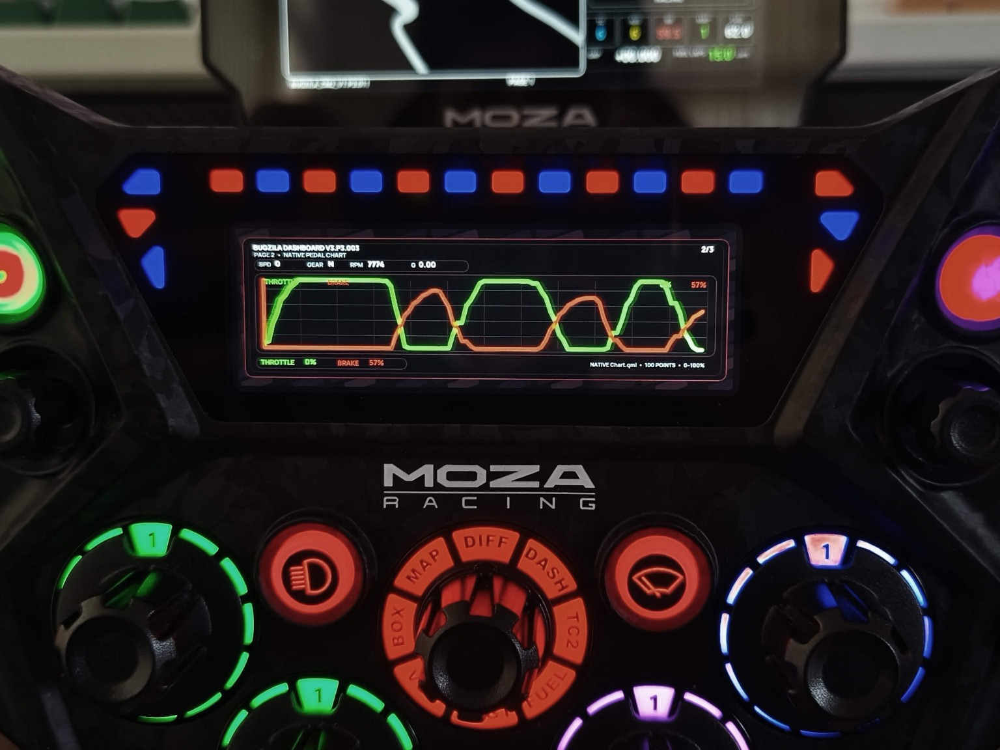
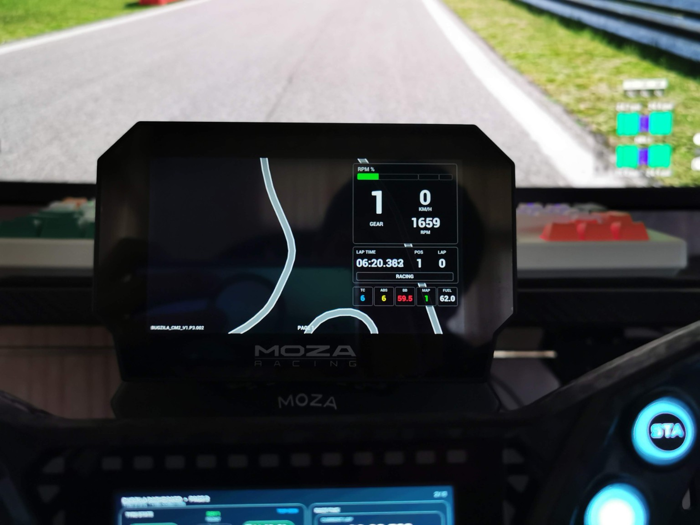
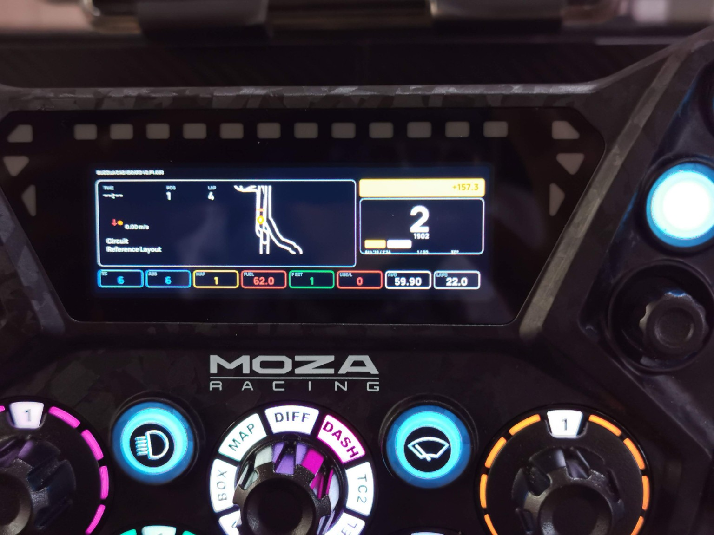
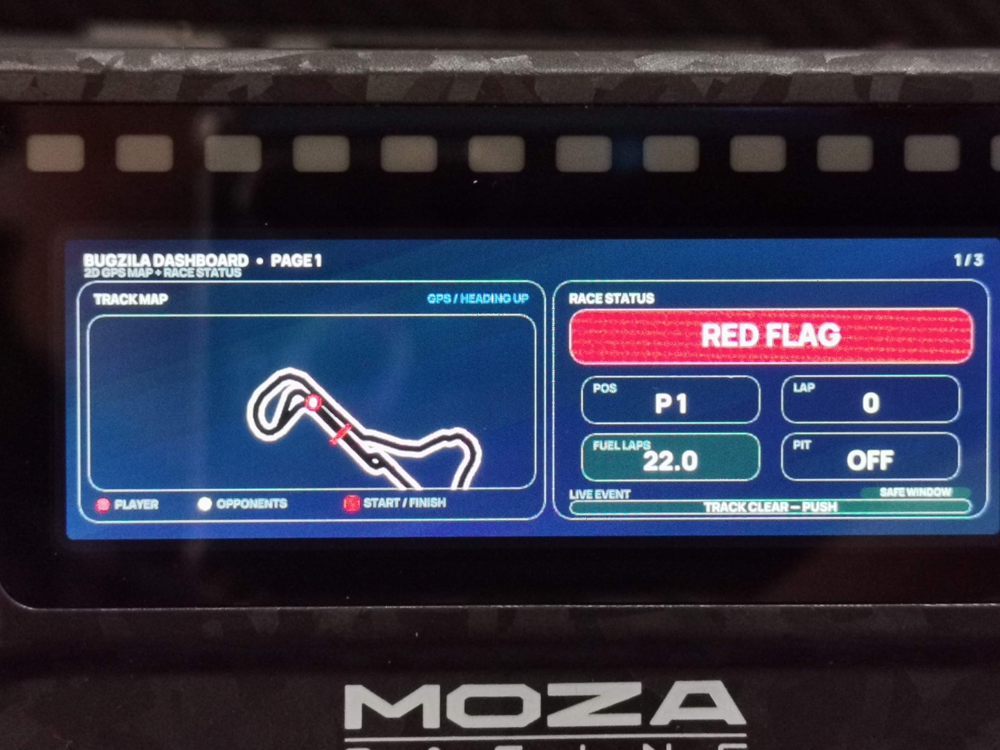
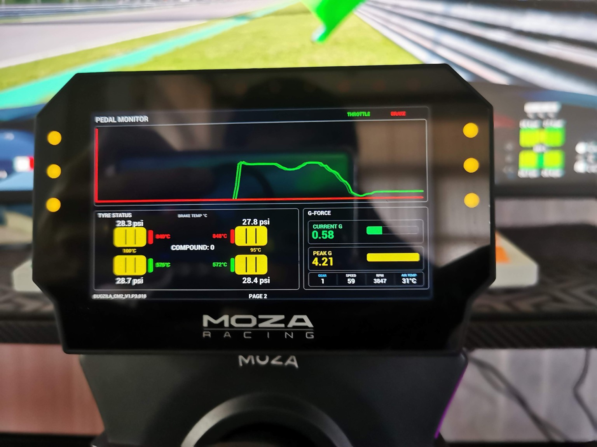

01
INTERNATIONAL SUPPORT
Ko-fi
Support Bugzila Labs directly from the embedded Ko-fi panel below, or open the Ko-fi page in a new tab.
The embedded payment panel is provided directly by Ko-fi.
SIM RACING DASHBOARD HUB
Purpose-built telemetry dashboards for sim racers. Clean information, real-time data and layouts designed around real hardware.
SUPPORT BUGZILA LABS
Every Bugzila dashboard remains free to download. If the project is useful to you, an optional contribution helps support new dashboard layouts, hardware testing, maintenance and future releases.
No contribution is required to use or download any dashboard. Choose the option that is most convenient for you.
INTERNATIONAL SUPPORT
Support Bugzila Labs directly from the embedded Ko-fi panel below, or open the Ko-fi page in a new tab.
The embedded payment panel is provided directly by Ko-fi.
THAILAND
For supporters in Thailand, scan the PromptPay QR code below and enter any amount you would like to contribute.
สำหรับผู้สนับสนุนในประเทศไทย สามารถสแกน QR PromptPay ด้านล่าง แล้วระบุจำนวนเงินที่ต้องการสนับสนุนได้ตามสะดวก
Tap the QR code to open the full-size image.
REAL HARDWARE PREVIEW
See Bugzila dashboards running on real MOZA hardware, then follow the quick setup guide for CM2 and KS Pro.

MOZA CM2
Real-world CM2 example with the large track map, gear, RPM, lap timing and live race status visible on device.

MOZA KS Pro
Native KS Pro pedal-monitor view with throttle and brake traces, compact telemetry and a layout designed around the wheel display.

MOZA CM2
Another CM2 example showing the Page 1 map-focused concept and a compact right-side telemetry stack during real use.

MOZA KS Pro
KS Pro example with map, delta, gear, and key car settings arranged for fast readability during a stint.

MOZA KS Pro
KS Pro status page example showing flag-state communication, track map legend, position, fuel laps and pit status.

MOZA CM2
CM2 example of the pedal chart page with throttle/brake data, tire information, brake temperatures and G-force readouts.
.mzdash file, then apply or sync it to the device.Pit House menu names may vary slightly by version, but the workflow remains: connect device → import dashboard → apply to device.
.mzdash file and sync it to the wheel.Always use the dashboard file that matches the target hardware family.
For the current Bugzila KS Pro multi-page layouts, hold the top-left button near TC, then use the 7-way joystick left / right to change between dashboard pages.
If more than one dashboard set is installed, use the 7-way joystick up / down while holding the same button to switch between dashboard sets.
This guidance reflects the current Bugzila KS Pro setup. If you remap controls in MOZA Pit House, the exact button behavior may differ.
CURRENT RELEASES
Only the latest version of each dashboard family is featured here. Previous versions remain available in release history.
VERSION CONTROL
COMMUNITY
Use Quick Comments for short feedback and impressions. Open a dedicated GitHub Discussion when you need bug tracking, a feature request or a support answer.
Leave short feedback, impressions and real-world usage notes without leaving the Dashboard Hub.
Report telemetry, display or compatibility issues with enough detail to reproduce them.
Suggest new pages, telemetry fields, layouts, platforms or usability improvements.
Ask installation, compatibility and usage questions for the community.
MORE FROM BUGZILA
Music and radio designed for the road. Enjoy Local Music, Online Radio and Android Auto in one focused driving experience.